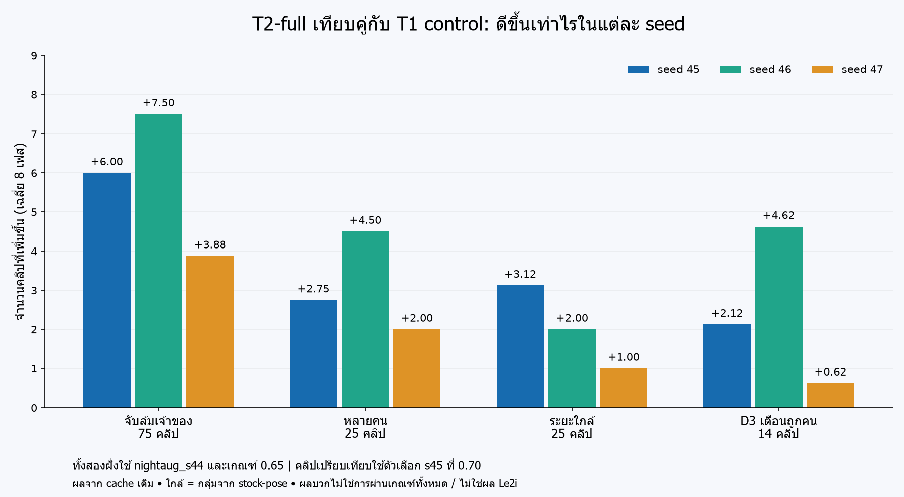
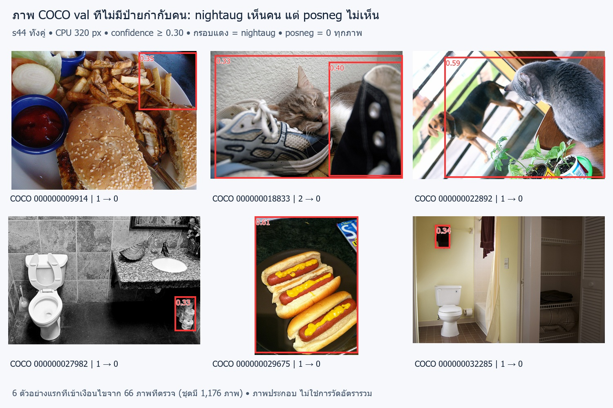
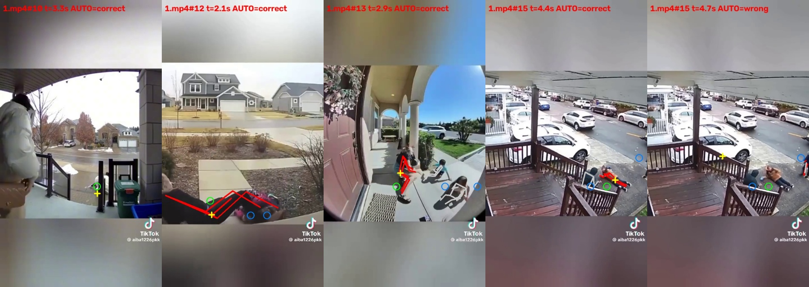
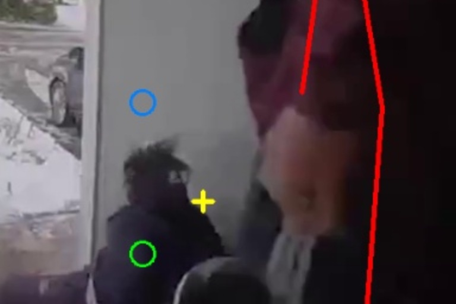
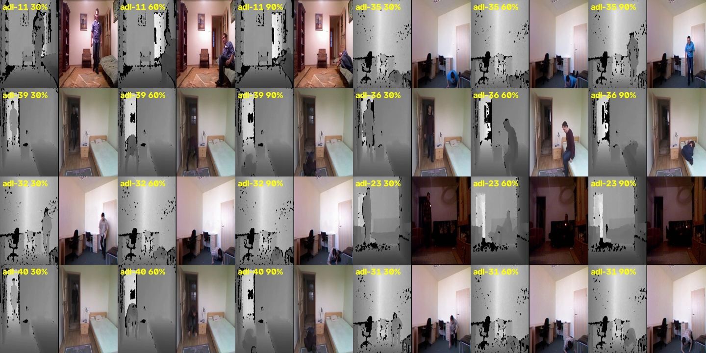

จับล้มได้มากขึ้น หรือเตือนผิดคนน้อยลง
ผลทดลอง 3 ตุลาคม 2026 เวลา 21:00 ถึงบ่าย 5 ตุลาคม 2026 · มีสองทางเลือกให้เจ้าของตัดสิน ก่อนทดสอบยืนยันครั้งสุดท้าย
รายงานนี้เรียบเรียงจากโครงเนื้อหาสุดท้ายและผลตรวจเดิม ไม่ได้รันวัดตัวเลขใหม่ ภาพและคลิปเป็นตัวอย่างประกอบ ไม่ใช่หลักฐานว่าผลดีขึ้นกับทุกกล้อง
0. อัปเดตล่าสุด (บ่าย 5 ต.ค.)
เจ้าของตัดสินแล้ว 2 เรื่อง: (1) เลือก A = ตัวหาท่าทาง nightaug_s44 + ตัวตัดสิน T2-full รอบสุ่ม 45 ที่เกณฑ์ 0.70. (2) คนที่ตั้งใจคุกเข่าหรือนอนลงบนพื้นเอง ไม่นับเป็นการเตือนผิด (ระบบเตือนได้ ไม่ถือว่าผิด).
ทดสอบยืนยันกับ Le2i ครึ่งแรก (63 คลิป: ล้ม 47, ไม่ล้ม 16) — วางกติกาไว้ก่อนรัน ทีมทั้ง 3 ตรวจแล้ว:
- เทียบ A กับระบบที่ใช้จริงตอนนี้ (ตัวหาท่าทางเดิม + ตัวตัดสินเดิม ที่ 0.65) ทั้งระบบเต็ม บน CPU แบบเดียวกับเครื่องจริง ครบ 8 จังหวะการตัดภาพ (รวม 16 รอบ)
- A ผ่าน ก็ต่อเมื่อ (ค่าเฉลี่ยทั้ง 8 รอบ) จับล้มได้ ≥ ระบบเดิม และ เตือนผิด (หลังใช้กติกาเรื่องพื้นของเจ้าของ) ≤ ระบบเดิม — ไม่เผื่อแม้แต่คลิปเดียว (Gemini ขอให้เข้มขึ้นจากเดิมที่เผื่อ 2)
- คลิปที่ไม่ล้มแต่ระบบเตือน จะตัดเป็นวิดีโอสั้นรอบจังหวะที่เตือน ให้ Claude กับ Gemini ตัดสินแยกกันโดยไม่รู้ว่าเป็นของระบบไหน ว่าเป็น "ตั้งใจลงพื้น" หรือไม่ (รายงานทั้งตัวเลขเตือนผิดดิบและหลังใช้กติกา; ถ้าคลิปใดนับเป็นเตือนผิด นับให้ทุกระบบที่เตือนในคลิปนั้น; วิดีโอครอบตั้งแต่เตือนครั้งแรก −3 วินาที ถึงครั้งสุดท้าย +3 วินาที รวมทุกระบบทุกรอบ; ถ้ามีเตือนที่ไม่ใช่การลงพื้นแม้ครั้งเดียว นับเป็นเตือนผิด); ถ้าเห็นต่างกัน ถามเจ้าของ
- Codex ตรวจโค้ดพบจุดเสี่ยง 4 จุด (ตั้งค่าหลุดจากที่ล็อกไว้, วิดีโอเสีย/อ่านไม่ครบแล้วนับเป็นผ่าน, ไฟล์ผลเก่าปนผลใหม่, ผลไม่ครบ 8 รอบแต่ยังให้คะแนน) แก้โค้ดครบแล้ว ทดสอบให้เห็นว่าระบบปฏิเสธจริง 2 กรณี (ผลไม่ครบ 8 รอบ, มีไฟล์ผลเก่าค้าง) อีก 2 กรณีตรวจจากโค้ด ยังไม่ได้ลองรันจริง
สถานะ: เริ่มรัน 13:38 แล้วพักไว้ตามที่เจ้าของสั่งตอน 13:42 — ยังไม่มีไฟล์ผลออกมา และ Claude แจ้งว่าไม่ได้เปิดดูผล (ดูแค่จำนวนบรรทัดความคืบหน้า แล้วลบบันทึกนั้นทิ้งโดยไม่เปิดอ่าน) จึงถือว่าครึ่งแรกยังไม่ถูกใช้ตัดสินอะไร และรันใหม่ได้ครั้งเดียวตามกติกาเดิม; ครึ่งหลังยังสงวนไว้ (ห้องกาแฟเคยใช้แล้ว จึงไม่นับเป็นชุดทดสอบ). เวลาเป็นประมาณการ: รันราว 1 ชม. + ตัดสินคลิปราว 20 นาที.
ไฟล์: training/measure/le2i_eval.py, training/le2i_final.sh, training/data/le2i_holdout_manifest.json, AI_HANDOFF.md (pre-registration 5 ต.ค.)
1. สรุปสั้น (5 บรรทัด)
ความหมาย: ในผลที่วัดได้ (ตัวหาท่าทางใหม่ + ตัวตัดสิน T2-full รวมกัน) จับล้มในคลิปเจ้าของและฉากหลายคนได้มากขึ้นในเกือบทุกรอบ แต่ยังพิสูจน์ไม่ได้ว่ามาจาก T2-full แต่ผลการผ่านเกณฑ์ต่างกันมากระหว่างรอบสุ่ม (ผ่าน 2 ใน 6). ตัวเลือกสุดท้าย (รอบ 45) ถูกเลือกหลังเห็นผลแล้ว จึงยังพิสูจน์ไม่ได้ว่าเสถียร ส่วนที่ดีกว่าระบบปัจจุบันมาจากทั้งตัวหาท่าทางใหม่และตัวตัดสินใหม่รวมกัน ไม่ได้มาจาก T2-full อย่างเดียว. ทีมยังแนะนำ A แต่มีเงื่อนไข: ต้องผ่านการทดสอบ Le2i ครึ่งแรก (ยังไม่ได้ใช้ตัดสินอะไร) 1 ครั้งก่อน และยังไม่ใช่การอนุมัติใช้งานจริง. (บ่าย 5 ต.ค. เจ้าของเลือก A แล้ว — ดูหัวข้อ 0) ไฟล์: training/data/stage1/results_pinned.jsonl (T2_truncfull_s48..s50_*), training/t2f_more_seeds.sh
ได้ตัวเลือกสุดท้ายหนึ่งตัวที่ผ่านเกณฑ์ที่ล็อกไว้ทุกข้อ (แต่ดูอัปเดต 02:45 ด้านบน — ผลต่างกันมากระหว่างรอบสุ่ม): ตัวหาท่าทาง POSE-IR (nightaug_s44) + ตัวตัดสิน สูตร T2-full (รอบสุ่มที่ 45) ที่เกณฑ์ 0.70 เทียบกับระบบที่ใช้จริงตอนนี้: จับล้มคลิปเจ้าของ 37.1 vs 33.75 /75, คลิปหลายคน 15.25 vs 10.9 /25, เตือนผิดไม่เพิ่ม (ยังต้องผ่านชุดทดสอบ Le2i ที่ไม่เคยแตะ 1 ครั้ง ก่อนจะเรียกว่าดีขึ้นจริง)
สร้างตัววัดใหม่ "เตือนถูกคนไหม" ในฉากหลายคน (ทั้ง 3 ตัวตรวจผ่าน)
T3 (สอนไม่ให้เห็นสิ่งของเป็นคน) ลดลงครึ่งหนึ่งแต่ไม่ผ่านเกณฑ์ทุกรอบ → วิธีไม่ผ่าน; รอบ s44 ทดสอบเต็มแล้ว = ทางเลือกที่สอง
ขอเจ้าของเลือก 1 ใน 2 (ทั้งคู่ผ่านเกณฑ์ที่ล็อกไว้ 5 ข้อ): A = จับล้มได้มากกว่า, B = เตือนผิดคน/เห็นของเป็นคนน้อยกว่า (ดูหัวข้อ 4b)
เหตุขัดข้อง: สคริปต์ค้างจากตอนพักทำให้เทรนซ้อนกัน 2 ตัว → เทรนใหม่, พบว่าการเทรนให้ผลซ้ำได้เป๊ะ
คำว่า “หนึ่งตัว” หมายถึงตัวตัดสิน T2-full s45 ที่เลือกไว้ ส่วนตัวหาท่าทางยังมีสองทางเลือก A และ B; “เตือนผิดไม่เพิ่ม” ในสรุปหมายถึงคลิปเจ้าของ สำหรับกลางคืนดูค่าจริงแยกในตาราง 4b
ที่มาเนื้อหา: โครงเนื้อหาสุดท้าย บรรทัด 6 · ไฟล์หลักฐานและคำสั่งเดิม
4b. ทางเลือกให้เจ้าของตัดสิน (ทั้งคู่ใช้ตัวตัดสิน T2-full s45 ที่ 0.70; ทีมทั้ง 3 เห็นตรงกันว่าควรให้เจ้าของเลือก)
A · จับล้มได้มากกว่า
ทีมแนะนำตามความสำคัญที่เจ้าของให้กับการล้มกลางวันและฉากหลายคน แต่เห็นสิ่งของเป็นคนมากกว่าเกณฑ์ที่ยังรอตัดสิน
B · เตือนผิดคนน้อยกว่า
เห็นสิ่งของเป็นคนน้อยกว่า แต่จับล้มคลิปเจ้าของได้น้อยกว่า A และต่ำกว่าระบบเดิมเล็กน้อย
| ระบบที่ใช้ตอนนี้ | A: ท่าทาง nightaug_s44 (แนะนำ) | B: ท่าทาง posneg_s44 | |
|---|---|---|---|
| จับล้มคลิปเจ้าของ /75 | 33.75 | 37.1 | 33.6 |
| ฉากหลายคน /25 | 10.9 | 15.25 | 12.5 |
| ล้มกลางคืนจำลอง /60 | 17.7 | 37.7 | 32.3 |
| URFD ล้ม /28 | 21.8 | 23.4 | 24.4 |
| URFD ไม่ล้ม ไม่เตือน /20 | 17.1 | 16.5 | 16.6 |
| คลิปชุดตรวจ (val) ไม่เตือนผิด /16 | 7.1 | 10.9 | 10.6 |
| เตือนผิดกลางคืน /40 | 3.33 | 3.67 | 3.33 |
| คลิปเจ้าของเตือนผิด /13 | 1.75 | 0.50 | 0.38 |
| เตือนผิดคน (ฉากหลายคน) /14 | — | 2.75 | 0.38 |
| เห็นสิ่งของเป็นคน /1000 ภาพ | 72 | 141 | 60 |
ข้อยกเว้นที่ต้องรู้ (Codex): B จับล้มคลิปเจ้าของต่ำกว่าระบบปัจจุบันเล็กน้อย (33.6 vs 33.75); A เห็นสิ่งของเป็นคนเกินเพดาน (ยังรอเจ้าของตัดสินเรื่อง COCO floor)
คำแนะนำทีม: A เพราะเจ้าของให้ความสำคัญกับจับล้มกลางวันและหลายคนก่อน; เลือก B ถ้าการเตือนผิดคน/เห็นของเป็นคนสำคัญกว่า
หลังเจ้าของเลือก: ทดสอบยืนยันด้วยชุดคลิปที่ไม่เคยแตะ (Le2i half 1) ครั้งเดียวกับตัวที่เลือก (เลือก seed s45 จาก 3 ตัว โดยดูเกณฑ์ที่มี URFD = มีอคติการเลือก ต้องยืนยันด้วยชุดที่ไม่เคยแตะ)
ไฟล์: training/data/stage1/results_pinned.jsonl (T2_truncfull_s45_rule, P2_posneg44_t2fs45_070, parity_deployed_v2), .ai_evidence/verify_pose_choice_codex.txt
บันทึกความผิดพลาด: Claude เขียน "ผ่านที่ 40%" เอง Gemini จับได้ → ถอน
สถานะ: รอเจ้าของเลือก ทั้งคู่ผ่านเกณฑ์ตัวเลขห้าข้อ ไม่ได้แปลว่าผ่านทุกเงื่อนไขให้นำขึ้นใช้จริง ผลกลางคืนจำลองของ A จับได้ 36–40/60 และเตือนผิด 2–7/40; B จับได้ 30–35/60 และเตือนผิด 2–4/40 จากการสุ่มสามแบบ
ที่มาเนื้อหา: โครงเนื้อหาสุดท้าย บรรทัด 40 · ไฟล์หลักฐานและคำสั่งเดิม
คำศัพท์และวิธีอ่านตัวเลข
ระบบมีสองส่วน: ตัวหาท่าทางหาตำแหน่งร่างกายในภาพ แล้วตัวตัดสินดูท่าทางต่อเนื่องว่าคล้ายการล้มหรือไม่ การเห็นคนจึงยังไม่เท่ากับจับการล้มได้
- T1 / T2 / T3 และ D3 / D5 / D6
- ชื่อเรียกการทดลองและงานตรวจแต่ละเรื่อง ไม่ใช่คะแนน: T1 เพิ่มคลิปสร้างด้วยคอมพิวเตอร์; T2 ฝึกกับร่างกายที่เห็นไม่ครบ; T3 เพิ่มภาพไม่มีคน; D3 ตรวจว่าเตือนถูกคน; D5 วิเคราะห์การล้มที่พลาด; D6 สกัดท่าทางใหม่ทั้งชุด
- POSE-IR, nightaug_s44, posneg_s44
- ชื่อรุ่นตัวหาท่าทาง: nightaug ฝึกเพิ่มด้วยภาพกลางคืนจำลอง; posneg ฝึกเพิ่มให้รู้จักภาพไม่มีคนด้วย ส่วน IR คืออินฟราเรดที่กล้องใช้มองกลางคืน ขณะนี้ตัวเลขกลางคืนมาจากภาพจำลอง ยังไม่ใช่กล้องกลางคืนจริง
- seed หรือ s45 / s46 / s47
- หมายเลขกำหนดการสุ่มตอนฝึก เพื่อทดลองว่าวิธีเดียวกันยังช่วยเมื่อเปลี่ยนการสุ่มหรือไม่ ตัวควบคุมคือรุ่นที่ฝึกด้วยสูตรเดียวกันแต่ไม่เพิ่มวิธีที่กำลังทดสอบ การเทียบคู่คือเทียบด้วยหมายเลขสุ่มเดียวกัน
- เกณฑ์ 0.65 / 0.70, TRUNC-full, ensemble
- เกณฑ์คือคะแนนที่ใช้ประกอบการตัดสินเตือน ไม่ใช่เปอร์เซ็นต์ความแม่นยำ TRUNC-full หรือ T2-full คือชุดฝึกให้รู้จักคนที่เห็นร่างกายไม่ครบแบบเต็ม ส่วน ensemble คือใช้ตัวตัดสินหลายตัวร่วมกัน
- URFD, val, Le2i, OF-Syn, COCO และ coco-pose
- ชื่อชุดข้อมูล: URFD ใช้วัดการล้มและกิจกรรมไม่ล้ม; val คือชุดตรวจระหว่างพัฒนา (ที่นี่คือ GMDCSA 16 คลิปไม่ล้ม); Le2i half 1 คือครึ่งชุดที่กันไว้ยืนยันหลังเลือก; OF-Syn คือคลิปสร้างด้วยคอมพิวเตอร์; COCO คือชุดภาพทั่วไป และ coco-pose คือส่วนข้อมูลท่าทางคน
- ตัวเลขมีทศนิยม และ /75 /25 /14
- อ่านเป็นจำนวนที่จับได้เฉลี่ยจากจำนวนทั้งหมด ไม่ใช่เปอร์เซ็นต์ คลิปเจ้าของมี 75 ช่วงล้มและ 13 ช่วงไม่ล้ม; ฉากหลายคน 25 ช่วง; ระยะใกล้ 25 ช่วง แต่ละค่าเฉลี่ยจาก 8 รอบที่เลื่อนจังหวะเริ่มเก็บภาพ ไม่ใช่คลิปใหม่เพิ่ม 8 เท่า งานเตือนถูกคนให้คะแนน 14 จาก 17 ช่วง (ตัดออก 3 ช่วง)
- จับล้ม / ไม่ล้มไม่เตือน / เตือนผิด / เตือนผิดคน / เห็นของเป็นคน
- สองค่าแรกยิ่งมากยิ่งดี ส่วนสามค่าหลังยิ่งน้อยยิ่งดี และวัดคนละเรื่อง: เห็นของเป็นคนยังไม่จำเป็นต้องเกิดการแจ้งเตือนล้ม เครื่องหมาย — คือไม่มีค่าที่นำมาเทียบในตารางนี้
- CPU, เฟรม, ms, p95, crop 320 และ COCO floor
- CPU คือหน่วยประมวลผลหลัก; เฟรมคือภาพหนึ่งใบในวิดีโอ; ms คือมิลลิวินาที (หนึ่งในพันวินาที); p95 คือเวลาที่ 95% ของภาพใช้ไม่เกินค่านั้น; crop 320 คือตัดบริเวณคนแล้วป้อนภาพขนาด 320 ให้ระบบ; COCO floor ในงานนี้หมายถึงเกณฑ์จำกัดการเห็นของเป็นคน ซึ่งยังรอเจ้าของตัดสิน
- process, deterministic, recipe.env, SYN_ / TRUNC_ และ scorecard
- process คือโปรแกรมที่กำลังทำงาน; deterministic คือทำซ้ำด้วยเงื่อนไขเดิมแล้วได้ผลเดิม; recipe.env คือไฟล์บันทึกค่าฝึก และ SYN_ / TRUNC_ คือชื่อกลุ่มค่าที่เกี่ยวกับคลิปสังเคราะห์และร่างกายไม่ครบ; scorecard คือตารางสรุปผลเทียบเกณฑ์
URFD ในตารางใช้ครึ่ง B: 28 คลิปล้ม / 20 คลิปไม่ล้ม; กลางคืนจำลอง 60 คลิปล้ม / 40 คลิปไม่ล้ม × การสุ่มสัญญาณรบกวน 3 แบบ ค่ากลางคืนเป็นค่าเฉลี่ย ไม่ใช่การวัดกล้องจริง
2. ทดลอง T1 — เพิ่มคลิปสังเคราะห์ (OF-Syn) ให้ตัวตัดสิน
ปัญหา: ตัวตัดสินแยก "นอนลง" กับ "ล้ม" ไม่ดี สาเหตุ: ข้อมูลฝึกมีท่านอนลงน้อย
ทำ: Claude + Gemini ตรวจคลิปสังเคราะห์แยกกัน เก็บเฉพาะที่ทั้งคู่ผ่าน 582 คลิป (นอนลง 307, ล้ม 275); ฝึก 3 seed
ผล: เตือนผิดลดลง แต่จับล้มคลิปเจ้าของลดลงทั้ง 3 seed (−7.5, −2.5, −6.25 /75) → ไม่ใช้
ไฟล์: training/data/stage1/results_pinned.jsonl (T1_syn_*, T1_ctrl_*), .ai_evidence/ofsyn_audit_all/
สถานะ: ไม่ใช้ T1 ตามผลทั้งสามรอบ ตัวเลขที่ลดลงเป็นจำนวนคลิปล้มที่จับได้ลดลงจากทั้งหมด 75 ช่วง
ที่มาเนื้อหา: โครงเนื้อหาสุดท้าย บรรทัด 15 · ไฟล์หลักฐานและคำสั่งเดิม
3. ทดลอง T2 — สอนตัวตัดสินให้รู้จักคนที่ตัวโผล่ไม่ครบ (โดนขอบภาพตัด / ถูกบัง)
ปัญหา: ล้มใกล้กล้องจับได้น้อยสุด (D5: 18 ใน 28 ที่พลาด มีท่าทางให้เห็นแต่ตัวตัดสินไม่เชื่อ)
แบบ "ตัดขอบอย่างเดียว" 3 seed: ไม่ช่วยระยะใกล้ (10.5/15.1/11.2 vs 10.8/14.9/14.0 /25) → ไม่ใช้
แบบ "เต็ม" (TRUNC-full) 3 seed เทียบคู่กับตัวควบคุมสูตรเดียวกัน: จับล้มคลิปเจ้าของ +6.0/+7.5/+3.9, หลายคน +2.7/+4.5/+2.0, ระยะใกล้ +3.1/+2.0/+1.0, เตือนถูกคน +2.1/+4.6/+0.6 → ดีขึ้นซ้ำได้ทั้ง 3 seed
แต่เกณฑ์ที่ล็อกไว้ (URFD ล้ม ≥21.8, URFD ไม่ล้มไม่เตือน ≥16.1, val ≥6.1, เตือนผิดกลางคืน ≤4.33, คลิปเจ้าของเตือนผิด ≤5) ผ่านแค่ s45 ที่เกณฑ์ 0.70 → ตัวเลือกสุดท้าย; รวม 3 ตัว (ensemble) ตกเกณฑ์ URFD 16.0 และกิน CPU +52%
ข้อควรระวัง: เลือก 1 ใน 3 โดยดูเกณฑ์ที่มีชุดทดสอบ URFD → ต้องยืนยันด้วย Le2i half 1 ครั้งเดียว
สถานะ: เลือกตัวตัดสิน s45 ที่ 0.70 เป็นตัวเลือกสุดท้าย แต่ยังรอเลือกตัวหาท่าทางและทดสอบชุดที่กันไว้ กราฟเทียบคู่ด้านล่างใช้ 0.65 ทั้งสองฝั่ง ไม่ใช่ตาราง A/B ที่ 0.70

ที่มาเนื้อหา: โครงเนื้อหาสุดท้าย บรรทัด 21 · ไฟล์หลักฐานและคำสั่งเดิม
4. ทดลอง T3 — สอนตัวหาท่าทางว่า "ภาพที่ไม่มีคน" หน้าตาเป็นอย่างไร
ปัญหา: ตัวหาท่าทางที่ฝึกเพิ่ม (nightaug) เห็นสิ่งของเป็นคนเพิ่มเป็นเท่าตัว (141 vs 72 /1000 ภาพ)
สาเหตุที่พบ: ชุดข้อมูล coco-pose ที่ใช้ฝึก ไม่มีภาพที่ไม่มีคนเลยแม้แต่ภาพเดียว
ทำ: ใส่ภาพไม่มีคน 5,000 ภาพ (10% ของการสุ่ม) ฝึก 3 seed
ผล: 120→63, 119→68, 141→60 (ลด 47.5/42.9/57.2%); เกณฑ์ที่ตกลง ≥50% ทุก seed → ผ่าน 1/3 = วิธีไม่ผ่าน การเห็นคนที่นอนพื้นหลังล้ม: 0.424→0.315, 0.405→0.389, 0.462→0.473 (s42 แย่ลง)
s44 ทดสอบเต็ม (19 ชุดข้อมูลทดสอบ): กับตัวตัดสินเดิม จับล้มคลิปเจ้าของลดลงมาก (34.0 vs 42.1 /75) และตกเกณฑ์ URFD ล้ม + เตือนผิดกลางคืน แต่กับตัวตัดสิน T2-full s45 @0.70 ผ่านทุกเกณฑ์ → เป็นทางเลือก B ในหัวข้อ 4b
สถานะ: วิธี T3 ไม่ผ่านเงื่อนไขว่าต้องลดการเห็นของเป็นคนอย่างน้อยครึ่งหนึ่งทุกรอบ แต่รุ่น s44 เมื่อนำมาจับคู่กับ T2-full ยังเป็นทางเลือก B ได้ ค่าการเห็นคนนอนพื้นเป็นสัดส่วน ยิ่งมากยิ่งดี

ที่มาเนื้อหา: โครงเนื้อหาสุดท้าย บรรทัด 31 · ไฟล์หลักฐานและคำสั่งเดิม
5. ตัววัดใหม่ "เตือนถูกคนไหม" (D3)
ปัญหา: ตัววัดเดิมนับว่าจับได้ ถ้ามีเตือนใดๆ ในคลิปที่มีคนล้ม แม้จะเตือนผิดคน
ทำ: Claude กับ Gemini มาร์กคนล้มแยกกันโดยไม่เห็นของกัน 17 คลิป (ตรงกัน 13, คุยตกลงอีก 4), Codex ตรวจโค้ด 3 รอบ แล้วพิสูจน์ด้วยภาพจริงตอนเตือน 10/10 ตรง
ผล: ระบบปัจจุบัน (ท่าทาง s44) เตือนถูกคน 8.0/14, ผิดคน 2.75; T1 ตัวควบคุม 4.75–6.4; T2-full s45 8.5
พบสาเหตุเตือนผิดคน 2 แบบ: กฎ "คนหายไปทันที" (ทดลองปิด → จับได้ลดลง จึงคงไว้) และคนใกล้กล้องที่โดนขอบล่างตัด
คำว่า “ระบบปัจจุบัน (ท่าทาง s44)” ในบันทึกส่วนนี้คือระบบทดลองที่ใช้ตัวตัดสินเดิมกับท่าทาง s44 ไม่ใช่ระบบที่ใช้งานจริงในตาราง 4b ค่า T2-full s45 ที่ 8.5 เป็นผลที่ 0.65; ตัวเลือก A ที่ 0.70 เตือนถูกคน 7.375/14 และ B 6.875/14 จึงไม่ควรนำ 8.5 ไปแทนค่าของตัวเลือก A


ที่มาเนื้อหา: โครงเนื้อหาสุดท้าย บรรทัด 59 · ไฟล์หลักฐานและคำสั่งเดิม
6. ความเร็วบน CPU (step 2)
ระบบเดิม 57 ms/เฟรม, ท่าทาง s44 เท่ากัน, ใช้ตัวตัดสิน 3 ตัวพร้อมกัน (ensemble) ช้าลง 52% และเฟรมที่ช้าที่สุด 5% (p95) ช้าลง 124% → ensemble ไม่ผ่านเกณฑ์ CPU
การซูมตัดเฉพาะบริเวณคนให้ใหญ่ขึ้น (crop 320 เพื่อช่วยคนที่อยู่ไกล): ช้าลง 13–16% เกินเกณฑ์ 5% → ไม่ใช้ เว้นแต่จะแม่นขึ้นมาก (multi_diag_v2/pipeline_timing_crop320.txt)
ทดลองปิดกฎ "คนหายไปทันที" (V3_COLLAPSE_ENABLED=0): จับได้ลดลง 0.75/75 → คงกฎไว้
สถานะ: ไม่ใช้การรวมสามตัว และไม่ใช้การตัดภาพ 320 ในตอนนี้ ค่า 57 ms คือเวลาประมวลผลต่อภาพที่เคยวัด ไม่ใช่คำรับรองความเร็วทุกเครื่อง กฎคนหายไปทันทีคงไว้
ที่มาเนื้อหา: โครงเนื้อหาสุดท้าย บรรทัด 67 · ไฟล์หลักฐานและคำสั่งเดิม
7. ปัญหาการทำงาน / เหตุขัดข้อง
สคริปต์ 4 ตัวหลุดจากการสั่งพัก 13:02 → 21:35 เทรนตัวควบคุมซ้อน 2 ชุด → เจ้าของอนุญาตหยุด, เทรนใหม่ชื่อใหม่ (ctrlA_s45c/s46c) ผลฝึกใหม่ตรงกับของเดิมเป๊ะ = ฝึกซ้ำกี่ครั้งก็ได้ผลเดิม (deterministic)
บั๊กเล็กที่พบ: บันทึกสูตรการเทรน (recipe.env) ไม่เก็บค่า SYN_/TRUNC_ (แก้ในสคริปต์ใหม่), สคริปต์จับเวลาเขียน "เสร็จ" แม้ล้ม
กฎใหม่: ตอนสั่งพัก ต้องเช็กรายการ process ว่าหยุดครบจริง
สถานะ: ฝึกใหม่และได้ผลซ้ำเดิมแล้ว ข้อกำหนดตรวจโปรแกรมตอนพักเป็นกติกางานต่อไป รายงานนี้ไม่ได้เริ่มหรือหยุดงานทดลองใด
ที่มาเนื้อหา: โครงเนื้อหาสุดท้าย บรรทัด 72 · ไฟล์หลักฐานและคำสั่งเดิม
8. ทีมทำงานร่วมกันอย่างไร
ทุกการตัดสินใจผ่าน Codex + Gemini; ตัวอย่างที่ทีมแก้ Claude: เกณฑ์ T3 40%→50%, ลืมเกณฑ์ที่ล็อก (ensemble), สคริปต์เทรนใหม่ 4 จุด, ตัววัด D3 6 จุด
สถานะ: ทีมตกลงให้นำ A และ B มาให้เจ้าของเลือก การตรวจอ่านรายงาน HTML ฉบับนี้โดย Claude และ Gemini ยังเป็นขั้นตอนถัดไป
ที่มาเนื้อหา: โครงเนื้อหาสุดท้าย บรรทัด 78 · ไฟล์หลักฐานและคำสั่งเดิม
8c. ลองแก้ "ผลแกว่งตามรอบสุ่ม" ด้วยการเฉลี่ยน้ำหนักโมเดลระหว่างฝึก (EMA) — 03:00–06:05 น.
ปัญหา: สูตร T2-full ผ่านเกณฑ์ครบแค่ 2 ใน 6 รอบสุ่ม และเกณฑ์ตัดสินที่ระบบเลือกแกว่ง 0.45–0.70.
สาเหตุที่สงสัย: ตอนฝึก ระบบเก็บโมเดลจาก "รอบฝึกเดียวที่คะแนนดีที่สุด" ซึ่งสุ่มแกว่งได้มาก.
แก้อย่างไร: เก็บค่าเฉลี่ยเคลื่อนที่ของน้ำหนักโมเดล (EMA) แทน — ยังเป็นโมเดลเดียว ตอนใช้งานไม่มีขั้นตอนเพิ่ม (ยังไม่ได้วัดเวลา CPU จริงของตัวนี้). Gemini ทักว่าวิธีแรกที่ Claude เขียนคำนวณค่าสถิติภายในโมเดลผิด และเสนอวิธีทดสอบ → ทดสอบแล้ว Gemini ถูก (คะแนนตรวจ 0.02 vs 0.51) จึงแก้ให้คำนวณค่าใหม่ทุกรอบ แล้วจึงเริ่มฝึก. ฝึก 2 แบบ (เฉลี่ยช่วงสั้น 0.999 และช่วงยาว 0.9999) แบบละ 6 รอบสุ่ม เกณฑ์ความสำเร็จตั้งไว้ก่อนดูผล: ผ่านเกณฑ์ครบ ≥ 4 ใน 6 รอบ, ช่วงต่ำสุด–สูงสุดของการจับล้มคลิปเจ้าของ < 21.6, ค่าเฉลี่ย ≥ 39.6. (คนละคำถามกับรอบสุ่ม 48–50 ที่ต้องผ่าน 3 ใน 3: อันนั้นถามว่ารอบใหม่ผ่านซ้ำได้ไหม ส่วนอันนี้ถามว่า EMA ดีกว่าแบบเดิมที่ผ่าน 2 ใน 6 หรือไม่)
| แบบ | ผ่านเกณฑ์ครบ | จับล้มคลิปเจ้าของ เฉลี่ย /75 | แกว่ง (ต่ำสุด–สูงสุด) | เกณฑ์ตัดสินที่เลือก | ผล |
|---|---|---|---|---|---|
| เดิม (T2-full) | 2/6 | 41.6 | 28.6–50.3 | 0.45–0.70 | — |
| EMA ช่วงสั้น (0.999) | 3/6 | 45.0 | 38.3–54.0 | 0.55–0.75 | ไม่ผ่าน (ต้อง 4/6) |
| EMA ช่วงยาว (0.9999) | 2/6 | 41.4 | 32.4–53.9 | 0.60–0.80 | ไม่ผ่าน |
ความหมาย: EMA ช่วงสั้นทำให้ภาพรวมดีขึ้นโดยเฉลี่ย (ผ่านเกณฑ์มากขึ้น แกว่งน้อยลง จับล้มเฉลี่ยมากขึ้น +3.4) แต่ไม่ทุกรอบ — 2 รอบจับล้มคลิปเจ้าของลดลงเล็กน้อย และไม่ถึงเกณฑ์ที่ตั้งไว้ล่วงหน้า (4 ใน 6) จึงยังไม่นับว่าพิสูจน์แล้ว. รอบสุ่มที่ 45 ของ EMA ผ่านเกณฑ์ครบและจับล้มคลิปเจ้าของได้ 42.0 (ตัวเลือกปัจจุบัน 37.1) แต่ตัววัดเตือนถูกคนต่ำลงเล็กน้อย (7.12 vs 7.38) และการเลือกมันตอนนี้คือการเลือกหลังเห็นผลอีกครั้ง → ทีมทั้ง 3 ตกลงคงตัวเลือกเดิม. สถานะ: ทั้งสองแบบไม่ผ่านเกณฑ์ที่ตั้งไว้. Claude เสนอฝึกรอบสุ่มเพิ่ม (51–56) แต่ Gemini ค้านว่าเป็นการลองซ้ำหลังผลไม่ผ่าน ทีมจึงยกเลิก — ไม่มีงานนี้ในคิว.
ไฟล์: training/train.py (EMA=1, ปิดเป็นค่าเริ่มต้น), training/t2fema_seeds.sh, t2fema4_seeds.sh, results_pinned.jsonl (T2FEMA_*, T2FEMA4_*), .ai_evidence/verify_ema_codex.txt
8b. ทำไมเกณฑ์ "URFD ไม่ล้ม ต้องไม่เตือน" ตกบ่อย (วิเคราะห์เมื่อคืน 4–5 ต.ค.; คลิป URFD เป็นภาพกลางวัน)
ปัญหา: ครึ่งหนึ่ง (3 ใน 6) ของรอบสุ่ม T2-full ตกเกณฑ์ข้อนี้ (เท่ากับเกณฑ์เตือนผิดกลางคืนจำลอง) (ต้องไม่เตือนในคลิปที่ไม่มีคนล้มอย่างน้อย 16.1 จาก 20 คลิป).
พบว่า (จากภาพนิ่งที่ Claude และ Gemini ดูแยกกัน ยังไม่ได้ดูจังหวะที่เตือนจริง): คลิปที่ทำให้เตือนผิดส่วนใหญ่คือ คนคุกเข่า/ก้มลงที่พื้น (จากภาพนิ่งยืนยันไม่ได้ว่าตั้งใจหรือไม่) (adl-31, 32, 35, 39, 40) หรือ นั่งแล้วเอนนอนบนเตียง/โซฟา (adl-11, 36). คลิป adl-35 และ adl-39 ทำให้เตือนในทุกตัวที่ทดสอบ รวมถึงตัวตัดสินเดิมด้วย. อีก 2 คลิป (adl-23 นั่งในห้องมืด, adl-28) เตือนในบางรุ่น. ตัวตัดสินเดิมบนตัวหาท่าทางเดียวกันห่างจากเส้นเกณฑ์เพียง 0.8 คลิป; รอบที่ตก (46, 48, 50) เตือนผิดเพิ่มเฉลี่ยราว 3 คลิปต่อรอบทดสอบ.

เจ้าของตอบแล้ว (5 ต.ค.): ถ้าตั้งใจลงพื้นแล้วระบบเตือน ไม่นับเป็นการเตือนผิด → ใช้กติกานี้กับการทดสอบ Le2i (หัวข้อ 0). ตัวเลขเกณฑ์ URFD ในรายงานนี้ยังคิดแบบเดิม ไม่ได้แก้ย้อนหลัง.
ไฟล์: training/data/multi_diag_v2/urfd_adl_fa_by_clip.txt · report/img/day3_urfd_adl_fa_clips.jpg
9. งานต่อไป + ขอเจ้าของ
Day 3: เลือกตัวหาท่าทาง (nightaug_s44 vs posneg_s44) → scorecard สุดท้าย → Le2i half 1 ครั้งเดียว → รายงาน+คลิป
D6 (สกัดท่าทางใหม่ทั้งชุดด้วยตัวหาท่าทางที่เลือก) ยังไม่เริ่ม
ขอเจ้าของ: อีเมลขอ MUVIM (ภาพ IR จริง), ตัดสินเรื่องใช้เชิงพาณิชย์, เกณฑ์ COCO floor, เข้าเครื่อง server
สถานะ: รอการตัดสินของเจ้าของ MUVIM คือชื่อชุดข้อมูลภาพอินฟราเรดจริงที่ต้องขอสิทธิ์เข้าถึง ส่วน server คือเครื่องที่จะนำระบบไปใช้งานจริง
ที่มาเนื้อหา: โครงเนื้อหาสุดท้าย บรรทัด 81 · ไฟล์หลักฐานและคำสั่งเดิม
หลักฐานและขอบเขตของรายงาน
ตัวเลขยกมาจากผลเดิมที่ตรวจแล้วตามคำสั่งเจ้าของ รอบนี้สร้างหน้าเว็บและคัดลอกรูปเท่านั้น ไม่ได้ตรวจตัวเลขซ้ำ ไม่ได้ทดสอบ Le2i และไม่ได้วัดความเร็วใหม่
- ตาราง A/B: ผลตรวจเดิมพร้อมจำนวนคลิปและบรรทัดต้นทาง; คำสั่งเดิม
& ([scriptblock]::Create((Get-Content -Raw .ai_evidence/verify_pose_choice_codex.ps1))); แถวระบบจริง / A / B อยู่ในtraining/data/stage1/results_pinned.jsonl:10,36,55 - เกณฑ์ T2: ผลตรวจเดิม; คำสั่งเดิม
& ([scriptblock]::Create((Get-Content -Raw .ai_evidence/verify_t2full_revised_codex.ps1))); จำนวนคลิปใช้ตามคำอธิบายวิธีอ่านด้านบน - ภาพและคลิป: คำสั่งสร้าง สถานที่มา และจำนวนภาพ; คำสั่งเดิม
python tools/day3_media.py chart,grid,clips,verify(สั่งแยก); กราฟและแถวต้นทาง, ภาพ COCO, คลิป, ผลตรวจไฟล์จากรอบก่อน - เหตุขัดข้องและมติทีม: บันทึกทีมตั้งแต่บรรทัด 3021; เรื่องที่ไม่ได้มีคำสั่งวัดในโครงเนื้อหาเป็นคำอธิบายตามบันทึก Claude ไม่ใช่การรับรองผลทดลองใหม่จากผู้จัดหน้า
- รูปตรวจคนที่เตือน: คัดลอกจาก
../.ai_evidence/track_audit/sheet1.jpgและ9_17_zoom.jpgเข้ามาในโฟลเดอร์ภาพของรายงาน โดยไม่ปรับรูป